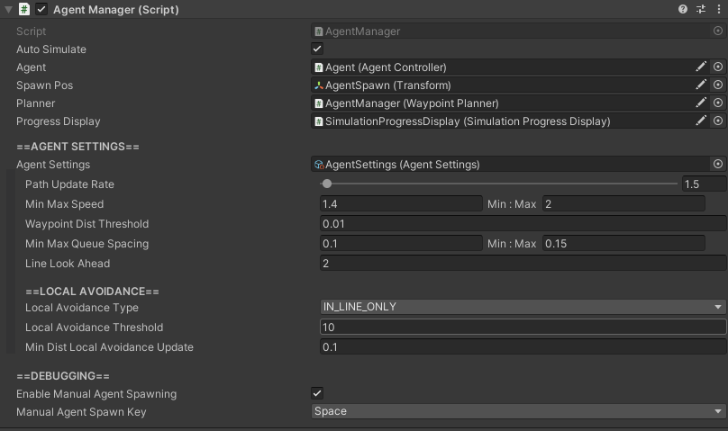

AgentManager

How To Locate
The AgentManager component is located on the GameObject with the name "AgentManager", which can be found in the hierarchy.
Settings
| Setting | Description |
|---|---|
| Auto Simulate | Toggles whether or not agents should automatically simulate. If true, agents will simulate according to their configured time blocks as soon as the simulation is started. |
| Agent | ADVANCED USER SETTING. Reference to agent to use in simulation. |
| Spawn Pos | Reference to the position where agents will spawn when they first enter the simulation. |
| Planner | ADVANCED USER SETTING. Reference to the WaypointPlanner agents use to create their Plan |
| Progress Display | ADVANCED USER SETTING. Reference to the simulation progress display |
| Agent Settings | ADVANCED USER SETTING. Reference to the AgentSettings ScriptableObject. |
| Path Update Rate |
Number of times per second that each agent will recalculate its path. Higher values result in more accurate paths, but are more expensive to simulate. |
| Min Max Speed | Min and max movement speed of an agent. Whenever a new agent is added to the simulation, it will have a speed between these two values. |
| Waypoint Dist Threshold |
Min distance away from a target an agent must be to consider having "reached" their target. |
| Min Max Queue Spacing |
Min and max amount of spacing an agent in line will give between itself and the agent in front of it. |
| Line Look Ahead |
Number of agents ahead of itself an agent will look in a line when trying to position itself at the back of the line. Larger values result in straighter lines, but are more expensive. |
| Local Avoidance Type |
Type of local avoidance agents will use while simulating.NEVER- Agents never use local avoidanceIN_LINE_ONLY- Agents only avoid other agents that are currently in a line or at a waypoint ALWAYS- Agents always use local avoidance, whether they are in lines or walking from waypoint to waypoint. This type is very expensive to simulate and not recommended for simulations with a time scale of greater than 2.5x. |
| Local Avoidance Threshold |
Only applicable if Local Avoidance Type is not NEVER.Number of additional nodes another agent would need to walk before preferring to walk through the obstacle agent. |
| Min Dist Local Avoidance Update |
Only applicable if Local Avoidance Type is not NEVER.Min distance an agent must move before it updates the nodes affected by its own local avoidance. |
| Enable Manual Agent Spawning |
Toggles whether or not agents can be manually spawned in by the user. |
| Manual Agent Spawn Key |
Only applicable if Enable Manual Agent Spawning is true.Key to press to manually spawn an agent into the simulation. |